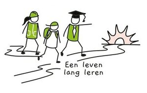

Hover over elke box voor een beschrijving
Seminarie: SAFe-framework
Locatie: Cipal Schaubroeck
Datum: 3/05/'23 t.e.m 4/05/'23
Uren:16
Binnen Cipal Schaubroeck, waar ik werk, werd er een seminarie georganiseerd over het SAFe framework. In dit seminarie van twee dagen werden de principes van dit framework uitgelegd. De bedoeling is dat alle teams op deze manier gaan werken. SAFe wat staat voor Scaled Agile Framework combineert de principes van Lean en Agile. Zo maakt onder andere Scrum en Kanban deel uit van het SAFe framework. de focus ligt op het genereren van klantwaarde en het continu vergroten van de kwaliteit van het opgeleverde product. Het is enorm waardevol voor organisaties waarin meerdere teams werken aan (complexe) producten in een steeds veranderende omgeving, wat het geval binnen Cipal Schaubroeck is. Door op deze manier te gaan werken kan men op een flexibele en dynamische manier continu value opleveren voor de klant.
Seminarie: Introductie in Cypress
Locatie: Cipal Schaubroeck
Datum: 1/03/'23
Uren: 2
Binnen Cipal Schaubroeck is er een korte introductie gegeven over het testing framework Cypress. De bedoeling is dat deze testing tool op korte termijn gebruikt gaat worden voor het testen van de frontend. Het is een open source Javascript framework voor het schrijven van end-to-end testen, component testen, integratie testen en unit testen. Het was een korte maar interessante en leerrijke voordracht. Dit heeft mij ook de aanzet gegeven voor het volgen van een Cypress Course op het Udemy leerplatform. Bij Cipal Schaubroeck hebben medewerkers hier gratis toegang tot het volgen van cursussen. Dit wordt nog meer in detail besproken bij de gekozen projecten.
E-learning: Cypress
Locatie: Zelfstudie op Udemy
Datum: 2/03/'23 tot 11/05/'23
Uren: 36
Na de seminarie introductie tot Cypress ben ik zelf praktisch aan de slag gegaan door het volgen van een cursus op het Udemy-leerplatform. In deze curus leer je testen schrijven voor verschillende frontend componenten in een browser. Ook wordt er geleerd hoe je Cypress kan intregreren in een CI pipeline door middel van Jenkins. Op deze manier worden de Cypress testen automatisch uitgevoerd als er nieuwe code gecommit wordt. In het onderdeel projecten wordt dit meer in detail besproken.
E-learning: Mern stack
Locatie: Zelfstudie op Udemy
Datum: 3/04/'23 tot 15/05/'23
Uren: 15
Mijn vriendin kwam met het idee om een soort van website/e-commerce platform te ontwikkelen voor het verhuren van kinderspeelgoed. Ik heb zelf 2 kleine kinderen en om steeds nieuw speelgoed te k open, dat na een tijdje toch ergens in een hoekje ligt omdat ze het niet meer leuk vinden, is het misschien wel leuk dat je speelgoed kan huren. Op deze manier kan je regelmatiger “nieuw” speelgoed huis halen waar de kinderen mee kunnen spelen.
React Js is een nieuwe technologie voor mij en ben ik al snel uitgekomen om iets te maken volgens de MERN stack. De MERN stack bestaat uit de technologieën MongoDb-Express JS-React Js-Node JS. Het is een Javascript stack waarmee op een relatieve eenvoudige en snelle manier een full stack applicatie ontwikkeld kan worden. In het onderdeel projecten wordt dit nog meer in detail besproken.
E-learning: Pygame
Locatie: Zelfstudie op Udemy
Datum: 24/04/'23 tot 8/05/'23
Uren: 8
Voor dit project heb mij in de wereld van de games begeven. Met Pygame, wat een library is van Python, heb ik enkele eenvoudige 2D games gemaakt. Uit nostalgie heb ik Space Invaders, tetris, asteroids en breakin bricks gemaakt. Dit was eigenlijk mijn eerste kennismaking in het programmeren van games en het was wel leuk om te doen. In het onderdeel projecten wordt dit meer in detail besproken.
Daily newsletter TLDR
Locatie: via email
Datum: elke dag
Uren: 5 min per dag
Too Long; Didn't Read. TLDR Newsletter is een nieuwsbrief die samenvattingen biedt van nieuwe interessante artikels uit verschillende vakgebieden, zoals technologie, wetenschap, politiek en cultuur. Het doel van de nieuwsbrief is om drukke lezers in staat te stellen snel een overzicht te krijgen van belangrijke trends zonder de volledige artikels te hoeven lezen. TLDR Newsletter is een handige bron voor mensen die op de hoogte willen blijven van actuele ontwikkelingen, maar beperkte tijd hebben om uitgebreide artikelen te lezen.
Sinds ik de opleiding Switch2IT volg ben ik ingeschreven op deze nieuwsbrief. Elke morgen bij mijn ontbijt lees ik deze nieuwsbrief door. Op deze manier blijf ik op de hoogte van nieuwe en vaak ook innovatieve technologieën. Zo is er ook een sectie over programming, design, data Science en web development. Er staat ook altijd een link naar het volledige artikel.Het is echt een aanrader.
Medium
Locatie: Medium app
Datum: elke dag
Uren: 5 à 10 min per dag
Medium is een open online platform waar iedereen artikels en blogposts kan publiceren over uiteenlopende onderwerpen. Zo kan iedereen zijn of haar ideeën en kennis delen met anderen. Je kan kiezen van welke onderwerpen je de laatste nieuwe artikels wil ontvangen. Ik heb de app gedownload en heb alles wat met Java en Angular te maken heeft aangeduid. Ik heb deze twee programmeertalen gekozen omdat er op mijn werk in deze talen ontwikkeld wordt. Mensen delen hun kennis en het is heel leerrijk. Sinds ik de app heb, heb ik al veel nieuwe zaken geleerd en ontdekt. Zeker en vast ook een aanrader!
Dev community binnen Cipal Schaubroeck
Locatie: Online via Teams
Datum: per 2 maanden
Uren: 2h
Sinds ik ben beginnen werken bij Cipal Schaubroeck, heb ik mij onmiddellijk aangesloten bij de dev community group. De bedoeling is dat er per 2 maanden wordt samengekomen, via MS Teams, om te brainstormen hoe de producten binnen Cipal Schaubroeck verbetert kunnen worden. Ook worden er korte presentaties gegeven over nieuwe technologieën, die iemand bijvoorbeeld is tegengekomen en misschien wel een opportuniteit kunnen zijn voor Cipal Schaubroeck. Op deze manier wordt er continue gestreefd naar verbetering en innovatie.
I-Talent portfolio
POP:Lang leven het leren!!! 
Het I-Talent portfolio dat een overzicht biedt van de verschillende onderdelen van I-Talent.
E-learning: Quarkus & Kubernettes
Locatie: Zelfstudie
Datum: nog te bepalen
Uren:
Het IT-landschap biedt zoveel interessant technologieën en frameworks aan. Quarkus en Kubernettes zijn twee dingen die op korte termijn op mijn agenda staan. Quarkus is een open-source framework voor het bouwen van moderne Java-applicaties zonder configuratie. Het gebruikt een compiler om native code te genereren voor het platform waarop de applicatie gaat runnen, waardoor men niets anders hoeft te doen dan de code te schrijven. Het Quarkus-project is een community-driven initiatief dat tot doel heeft een raamwerk te creëren waarmee u moderne Java-applicaties kunt bouwen en implementeren. Je kunt Quarkus zien als een lichtgewicht, open-source alternatief voor Spring Boot.
Doordat toepassing de dag van vandaag meer en meer in containers runnen en omdat Quarkus ook een nauwe band heeft met Kubernettes is het plan om hier ook een cursus van te volgen. Kubernettes is een open source tool om grote groepen containers en gecontaineriseerde applicaties eenvoudig te beheren.